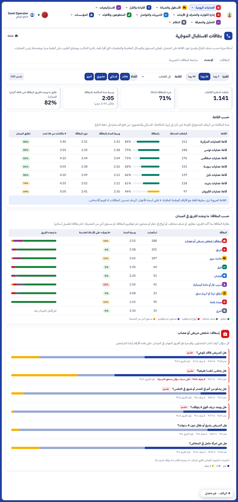
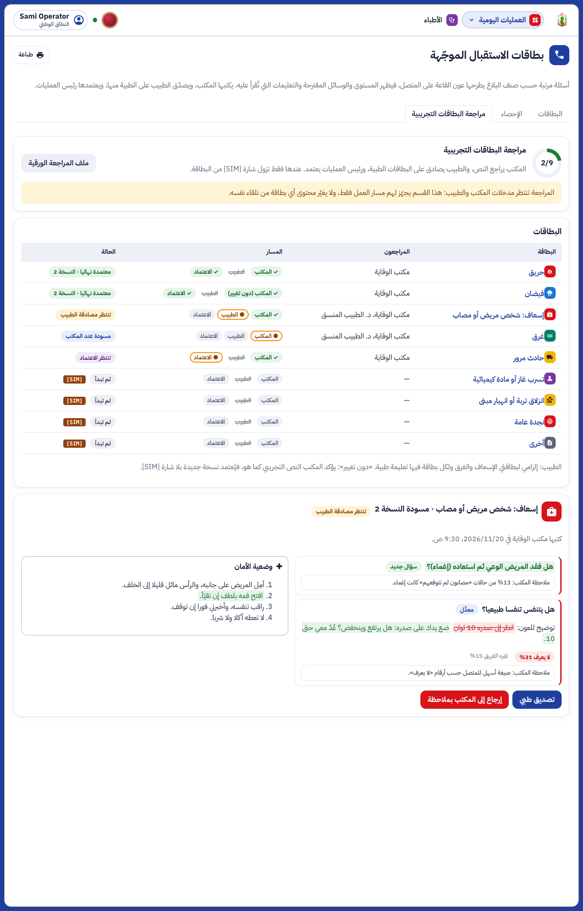

ء-حماية e-Himaya
تقرير المرحلة OS2b: إحصاء بطاقات الاستقبال الموجّهة ومراجعة البطاقات التجريبية (OS2-3 و OS2-4)
1. ما أُنجز
- صفحة بطاقات الاستقبال بثلاثة أقسام: «البطاقات» كما كانت، و«الإحصاء»، و«مراجعة البطاقات التجريبية».
- الإحصاء (OS2-3): الفترة (7 أو 30 أو 90 يوما) والقاعة والقناة؛ أربعة مؤشرات؛ جدول حسب القاعة (البلاغات المدخلة، نسبة البطاقة، وسيط المدة بالبطاقة ودونها، 9 مكالمات من 10 تحت، تطابق الميدان)؛ جدول حسب البطاقة (الاستعمال، المدة، «لا يعرف» على الأسئلة الحاسمة، ما وجده الفريق)؛ تفصيل كل سؤال؛ تصدير CSV.
- مدة المكالمة: من الهاتف المدمج (من الرد إلى الإنهاء) حين يُكتب البلاغ من المكالمة، وإلا من فتح الاستمارة إلى الحفظ (اللاسلكي والحضوري). القاعة الجهوية ترى سطرها مع الأرقام الوطنية، ولا يُسمّى أي عون.
- مسار المراجعة (OS2-4): تقدّم المراجعة (x من 9)، المراجعون لكل بطاقة، مسار المكتب ثم الطبيب ثم الاعتماد، «تأكيد النص دون تغيير»، ملاحظات المكتب لكل سؤال، التسليم، الإرجاع إلى المكتب بملاحظة من الطبيب أو رئيس العمليات، عرض التغييرات مقابل النسخة المعتمدة مع أرقام كل سؤال، وملف المراجعة الورقية للطباعة.
- لا يتغيّر المحتوى من تلقاء نفسه: البطاقات التسع تبقى بنصها التجريبي [SIM] حتى يرسل المكتب والطبيب نصهما. الاعتماد وحده يُزيل الشارة.
2. لقطات من المنظومة
[SIM] أرقام اللقطات ومسار المراجعة محاكاة للعرض.
الإحصاء: حسب القاعة، حسب البطاقة، وتفصيل أسئلة بطاقة الإسعاف

المراجعة: الطبيب يراجع بطاقة الإسعاف التي سلّمها المكتب

النموذج المعزول الذي وافقت عليه في additions/18-os2-followups/ من ملفات المشروع.
3. الصلاحيات
| العمل | من (النطاق الوطني) | الزر |
|---|
| قراءة الإحصاء والمراجعة | عون القاعة، رئيس العمليات، محرر المحتوى، الطبيب المنسق (القاعة الجهوية ترى قاعتها) | call_cards |
| تعيين المراجعين، «دون تغيير»، الملاحظات، التسليم | محرر المحتوى، رئيس العمليات | call_cards.edit |
| المصادقة الطبية | الطبيب المنسق، أو المحرر باسم الطبيب | call_cards.medical |
| الإرجاع إلى المكتب بملاحظة | الطبيب المنسق، رئيس العمليات | call_cards.return |
| الاعتماد | رئيس العمليات | call_cards.approve |
4. الاختبارات
- الخادم: 17 اختبارا لبطاقات الاستقبال ناجحة، منها 4 جديدة في
tests/test_call_cards_review.py (المدة، الإحصاء حسب القاعة ونطاقها، مسار المراجعة كاملا، «دون تغيير» للبطاقة الطبية). ruff وmypy نظيفان، ووثيقتا OpenAPI وERD محدّثتان.
- اللوحة: 731 اختبارا ناجحا (4 جديدة)، فحص الأنواع والتدقيق نظيفان، و
e2e/phase-os2b.spec.ts (اختباران في المتصفح، منهما هذه اللقطات).
5. ما بقي (قائمة الانتظار)
- OS2-4: نص المكتب للبطاقات التسع ومصادقة الطبيب على بطاقتي الإسعاف والغرق (المسار جاهز لهما).
- OS2-5 (مقترح): هدف لكل قاعة وتنبيه حين تنزل عنه، بعد أسابيع من الاستعمال الفعلي.